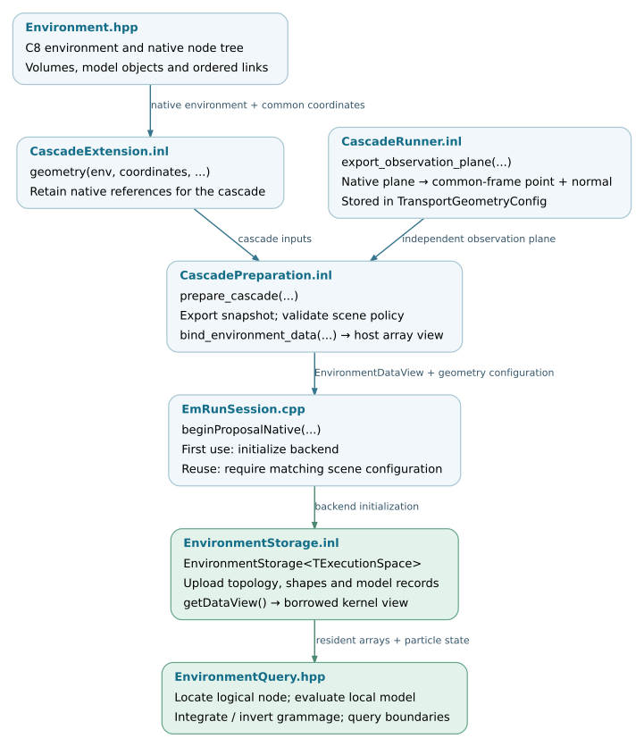

Environment and geometry
The application builds a native C8 environment. The Kokkos backend exports its topology and supported model parameters into numerical records, uploads them to execution-space memory, and queries those records during transport. The native scene remains available for C8 tracking and CPU process execution.
This chapter follows that interface from scene construction to device queries. It distinguishes support in the environment representation from the more restricted combinations accepted by each application and physics backend.
Note
Source baseline: d5297c43. The documented production path uses the exported environment tree. Legacy sphere-layer and convex-polyhedron compatibility paths are outside this chapter’s interface contract.
Representation and responsibilities
Layer |
Representation |
Responsibility |
|---|---|---|
Native C8 scene |
|
Scene construction, native tracking and process interfaces. |
Host snapshot |
|
Preserve ordered node relationships; export shapes and model parameters in one coordinate system. |
Backend storage |
|
Own the uploaded arrays in the selected execution space. |
Query interface |
|
Read topology and numerical models without calling native host objects. |
Scene construction is shared. Device evaluation is explicit: existing host objects are not passed directly into GPU kernels. Point location follows C8’s search order through a numerical implementation; ordered boundary selection uses an implementation body shared with the native path.
Source organization
Public contracts are under corsika/kokkos/environment/ and template
implementations under corsika/detail/kokkos/environment/. Native model
export interfaces remain with the media interfaces they extend.
corsika/media/ ├── Environment.hpp native scene owner ├── VolumeTreeNode.hpp volumes, models and node relationships ├── IDensityModelExport.hpp density parameter export ├── IUniformMagneticFieldExport.hpp uniform-field export └── IRefractivityModelExport.hpp refractivity parameter export corsika/kokkos/environment/ ├── EnvironmentTopology.hpp ordered graph and native-index mapping ├── EnvironmentSnapshot.hpp owning host parameter records ├── EnvironmentDataView.hpp borrowed pointer/count interface ├── EnvironmentStorage.hpp owning execution-space arrays ├── EnvironmentView.hpp managed read-only queries ├── EnvironmentBorrowedView.hpp queries over borrowed arrays ├── EnvironmentQuery.hpp transport query contracts ├── EnvironmentLeptonBoundary.hpp charged-particle boundary adapter └── TransportGeometryConfig.hpp query configuration and observation plane corsika/detail/kokkos/environment/ ├── EnvironmentPreparation.inl snapshot and observation export ├── EnvironmentSnapshot.inl topology, shape and model assembly ├── ShapeConversion.inl native volume conversion ├── ModelConversion.inl native model conversion ├── EnvironmentSnapshotKey.inl reuse key and compatibility fingerprint ├── EnvironmentStorage.inl allocation, copies and views ├── EnvironmentSearch.inl point containment and node location ├── ModelEvaluation.inl density and refractive-index evaluation ├── ModelGrammage.inl line integrals and inverses ├── NextEnvironmentBoundary.inl shared boundary-selection entry ├── CurvedBoundaryAccess.inl trajectory intersection adapter └── firn/FirnModel.inl firn profile and grammage operations corsika/detail/framework/geometry/ └── NextEnvironmentBoundaryBody.inl common native/Kokkos selection body
Application and session integration:
Source |
Responsibility |
|---|---|
Retain the native environment reference in cascade inputs. |
|
Export the scene, validate its policy and bind host data. |
|
Pass environment and geometry into the EM session. |
|
Initialize or reuse a session with matching scene data. |
|
Own uploaded arrays and expose the borrowed query view. |
Validation coverage
The following source tests cover representation, queries and native-path
comparisons. Their presence is not a claim that every test has run on every
GPU architecture. Tests using Kokkos::DefaultExecutionSpace exercise the
backend selected by that build; full-shower validation remains a separate
requirement.
Area |
Tests in |
Scope |
|---|---|---|
Topology and host export |
testEnvironmentTopology.cpp, testEnvironmentSnapshot.cpp, testShapeConversion.cpp, testModelConversion.cpp. |
Node order, ownership, native identities, coordinate conversion and rejection of unsupported exports. |
Array transfer and ownership |
testEnvironmentStorage.cpp, testEnvironmentSnapshotData.cpp, testEnvironmentTransfer.cpp. |
Uploaded records, borrowed views and transfer contracts. |
Point location and query results |
testEnvironmentSearch.cpp, testEnvironmentSearchDevice.cpp, testEnvironmentQuery.cpp, testEnvironmentQueryDevice.cpp. |
Native/reference comparisons, logical-node handling and query statuses. |
Model evaluation and grammage |
testModelEvaluation.cpp, testModelEvaluationDevice.cpp, testModelGrammage.cpp, testModelGrammageDevice.cpp, testFirnEnvironment.cpp. |
Density and refractive index, line-integral/inverse behavior, transformed firn profiles and surface-domain handling. |
Boundary intersections |
testStraightBoundary.cpp, testStraightBoundaryDevice.cpp, testCurvedBoundary.cpp, testCurvedBoundaryDevice.cpp, testLeptonBoundary.cpp, testLeptonBoundaryDevice.cpp. |
Ordered boundary results, trajectory adapters and intersection failure flags. |
Borrowed views in transport |
testEnvironmentBorrowedQuery.cpp, testEnvironmentBorrowedTransport.cpp. |
Queries and transport calls using the non-owning environment representation. |
Environment data flow
The application supplies the native environment and common coordinates through the cascade integration interface. Preparation exports a host snapshot; backend initialization uploads its arrays. Transport then accesses the resident representation. The native-node mapping is retained on the host for particle transfer, as described in Host and backend conversion.


Environment preparation and query interfaces. The observation plane is
separate from the material tree. Open the SVG to follow links to source.
SVG ·
Editable DOT source.